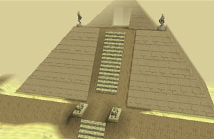
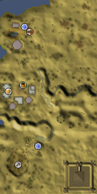
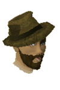

")
Western Desert (Members)
Warning | Introduction | Location | Points of Interest | Personalities | Quests
Dangers of the Western Desert | Miscellaneous
Dangers of the Western Desert | Miscellaneous
Warning
The western desert is not a pleasant place for people to explore, so it's a good idea to read up on desert survival before wandering aimlessly among the sands.
Also note that the bandits hate anyone that bears the symbols of Saradomin or Zamorak, and will attack anyone wearing these symbols on sight. If you aren't ready to be accosted by a number of muscular, tanned men with wicked blades, remove such items before arriving.
Introduction

Though their camps are small, there is a great history in this part of the world, as anyone who has earned the bandits' trust could tell you. The nomads, too, take great pride in their ways and their ancestral traditions. If further proof were needed, the mighty Jaldraocht Pyramid still stands thousands of years later, and still its statues guard its gates.
Location

The simplest way to the western desert must surely be via Ali Morrisane's magic carpets, which will take you to and from the Bedabin Camp.
Aside from this, though, there are a couple of magical artefacts that may be of use. Skilled thieves may have obtained a golden sceptre from the Jalsavrah Pyramid, which is able to teleport its owner directly to the top of Jaldraocht Pyramid. The Camulet, meanwhile, will teleport its owner to Enakhra's Temple, but only those who know how to find the temple in the first place will have access to such a device.
Points of Interest

The Bedabin are a proud people with a long tradition of wisdom and courtesy, so few adventurers are likely to find trouble there.
The bandits, however, are thoroughly lawless and not inclined to talk to anyone from outside the town - unless they have a very good reason to (reasons come in a variety of colours, but the bandits prefer gold).
South of both of these camps is a large mine, which still has a number of ores available, even after centuries of use.
Personalities
![[image]](../../img/main/kbase/npc/area_guides/chathead/al_shabim.gif) Al Shabim is the noble leader of the Bedabin nomads, and a wise and fair ruler he is. Despite his virtues, the Bedabin still have great difficulty being accepted among the other people of the desert, so they must remain nomadic, moving on whenever their livelihood is threatened. In recent times, though, Al Shabim's leadership has allowed them to remain in one place.
|
![[image]](../../img/main/kbase/npc/area_guides/chathead/eblis.gif) Eblis is a passionate bandit, so immersed in his people's culture and right of inheritance that he despises the followers of Saradomin and Zamorak equally. He is a spite-filled man, but knows more of the history of his land than anyone else within a dozen leagues.
|
|
| Al Shabim can be found in his tent in the Bedabin Camp. | Eblis can be found either in the east of the Bandit Camp, or tending to his mirrors south-east of the camp. |
|

Is any treasure hun... umm, archaeologist so famous or so successful as the famous and successful Asgarnia Smith? Can anyone best his feats of daring and skill in discovering the Golden Monkey of Tee-Tah-Toh? Who could so swiftly pull a crossbow from their pack to shoot a wild maniac with a curved sword who is screaming in a foreign tongue? Has any archaeologist recovered so many artefacts?
|
Great art has long had a place in the Kharidian Desert, and the sands in the west of the desert once held one of the greatest works. This mighty statue now lies in ruins, waiting for the expert hand to execute the perfect reconstruction - under Lazim's guidance, of course.
|
|
| Asgarnia Smith can be found plunde... umm, excavating and researching in the Bedabin Camp. | Lazim can be found north-east of the mine in the south of the western desert. |
![[image]](../../img/main/kbase/npc/area_guides/chathead/barman.gif) The Big Heist Lodge in the Bandit Camp is the only tavern in the western desert, so it's always full to overflowing. The bar does quick business, but the bandits' extreme mistrust of any outsiders (especially those wearing symbols of Saradomin or Zamorak) might make getting a drink there difficult. The barman knows more than most, though, so paying his 'outsider' prices might be worth your time.
|
| The barman can be found keeping the bandits cool in the Big Heist Lodge. |
Quests
The following quests can be started in the western desert:
- Desert Treasure (Members)
- Enakhra's Lament (Members)
Dangers of the Western Desert
![[image]](../../img/main/kbase/npc/area_guides/desert_wolf.gif) Ordinarily, wolves are large creatures that need large quantities of meat to maintain their prodigious strength. The desert wolves, however, are lean and vicious beasts, raised on the bitter winds of the shifting sands and the sun that blazes hot and high.
|
![[image]](../../img/main/kbase/npc/area_guides/ugthanki.gif) Camels are descended from a mightier, less placid beast with thicker and coarser hair and a temper to match. The ugthanki are not as vicious as that ancient ancestor, but they, unlike domestic camels, have retained a stronger sense of that breed. Ugthanki are bitter, spiteful creatures, and will not warm to people readily, but their meat can be warmed up and made into a tasty kebab.
|
|
| Desert wolves can be found east of the Bedabin Camp. | Ugthanki can be found in a variety of places throughout the desert. |
![[image]](../../img/main/kbase/npc/area_guides/bedabin_nomad_fighter.gif) The Bedabin are a proud people with a long history. They are also fearsome warriors entirely suited to the desert, so it is no surprise that their warriors have been the end of countless adventurers who have travelled unprepared across the desert. Their massive scimitars are powerful weapons, so it's best to defend against them.
|
![[image]](../../img/main/kbase/npc/area_guides/desert_bandit.gif) The bandits are the masters of their domain, driven by a hatred of the followers of Zamorak and Saradomin for reducing them to their current desert territories. They have plans, though, and hope one day to free their great hero, Azzanadra, to lead them into victory. Bandits are extremely dangerous in numbers, so try not to anger all of them at once.
|
|
| Bedabin nomad warriors can be found in the Bedabin Camp. | Bandits can be found wallowing in misery and plotting revenge in the Bandit Camp. |
Miscellaneous
- Those that have completed Desert Treasure will be able to swap their spellbooks by paying homage at the altar deep within Jaldraocht Pyramid. Luckily for them, the favoured few who have been granted that right also have the right to use the shortcut from the top of the pyramid.
- The mine south of the Bandit Camp, aside from the more usual coal and the like, also has rich seams of granite and sandstone.

More articles in
Other
|
|